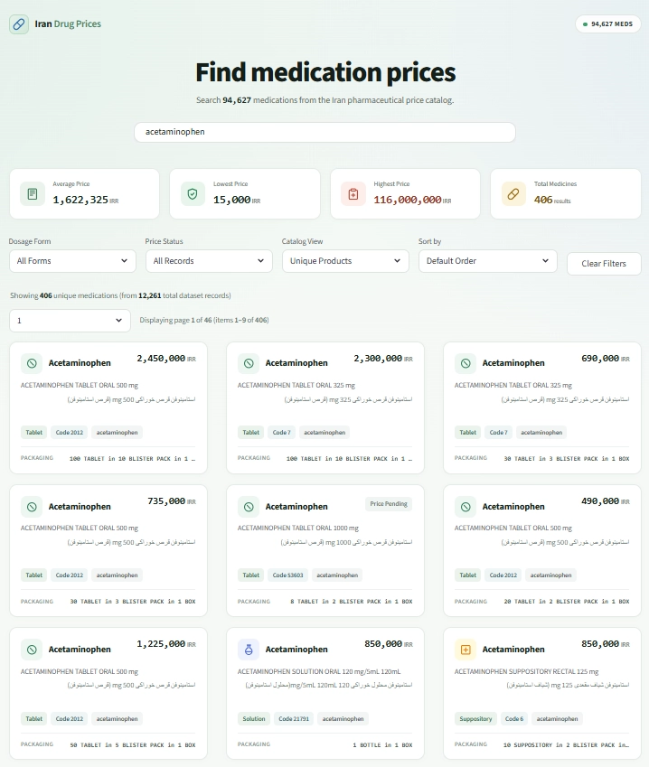

PHARMACEUTICAL DATA · SEARCH · ANALYTICS
Pharmaceutical Data Collection & Price Discovery
A Python-based pharmaceutical information platform that organizes medicine records and package-price data into a searchable catalogue, with live autocomplete for Persian and English medicine names and an interactive Streamlit dashboard.

Project interface: medicine search, price analytics, product cards, and detailed catalogue.
Project Overview
The project turns a prepared pharmaceutical dataset into a user-friendly search and price-discovery experience. It combines data collection and preparation workflows with a local catalogue, multilingual search, structured medicine cards, and summary price statistics.
Data source and refresh context
The upstream data context is Iran's public pharmaceutical information ecosystem, including information associated with the Food and Drug Administration and TTAC. In the current implementation, the Streamlit dashboard reads a prepared Excel workbook locally; searches and autocomplete run against that workbook rather than requesting live prices from an external portal for every query. Data freshness therefore depends on when the source workbook is collected and updated.
Core Features
The interface is designed to make a large medicine catalogue easier to explore without exposing users to the full spreadsheet by default.
Live Autocomplete
Displays suggestions while the user types, drawing from English names, Persian names, brand labels, and generic or active-ingredient search terms in the loaded catalogue.
Price Summary Metrics
Calculates average, lowest, and highest positive package prices, alongside the number of matching records, based on the active search and filters.
Search and Filtering
Supports medicine-name and generic-code search, dosage-form filtering, price-status filtering, unique-product or raw-record views, and sorting by price or name.
Medicine Cards and Detailed Records
Shows paginated medicine cards with available English and Persian descriptions, dosage-form labels, generic codes, packaging details, and price status, with the original filtered table available separately.
Filtered Data Export
Allows users to download the currently filtered dataset as a CSV file while retaining the original column headers from the workbook.
Flexible Dataset Handling
Detects supported column-name variants, normalizes Persian characters and digits for search, and handles missing or non-numeric price values during calculations.
How the Autocomplete Works
The autocomplete index is prepared from the loaded workbook and cached for reuse. A lightweight JavaScript component attaches to the Streamlit search field and presents matching suggestions as the user types. Users can select a suggestion with the mouse or keyboard.
Project Workflow
Public medicine information
Collecting pharmaceutical records from the relevant public information sources.
Data processing
Cleaning, normalizing, mapping, and preparing the medicine workbook.
Autocomplete index
Building cached suggestions across English, Persian, and generic terms.
Interactive dashboard
Searching, filtering, comparing prices, browsing records, and exporting results.
My Work
- Developed the Python and Streamlit dashboard for pharmaceutical catalogue search and price exploration.
- Implemented multilingual search normalization for Persian characters and Persian or Arabic numerals.
- Built a cached autocomplete index and a custom live suggestion dropdown supporting keyboard and mouse selection.
- Implemented dataset-aware column detection, price parsing, dosage-form extraction, filtering, sorting, pagination, and summary metrics.
- Designed medicine cards, a detailed data table, and filtered CSV export to make the catalogue easier to explore.
Technology Stack
Scope and Data Transparency
Information platform — not a clinical decision tool
This project supports medicine information discovery and price exploration. It does not provide diagnosis, treatment recommendations, prescribing advice, or medication-safety decisions. Displayed prices reflect the loaded dataset snapshot and should not be interpreted as guaranteed current prices. The dashboard does not make a live connection to an official portal during each search.